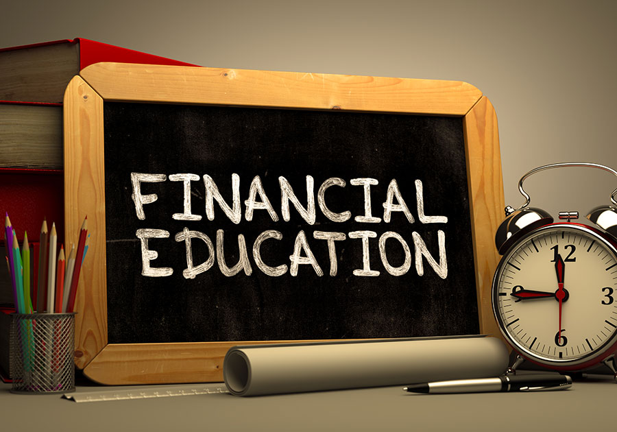

Financial Literacy 101 Personal Finance Guide
- How to Teach Financial Literacy: 15 Steps (with Pictures)
Financial literacy is the ability to understand and effectively use various financial skills, including personal financial management, budgeting, and investing. The lack of these skills is called ... - S&P Global FinLit Survey | Global Financial Literacy ...
Financial literacy foundation #2 - Cash flow versus capital gains. Most people invest for capital gains. The rich invest for cash flow. Simply put, investing for capital gains is like gambling. You invest your money and hope the price goes up. For instance, many people buy a house hoping they’ll be able to sell it for more money later. - Financial Literacy Definition - investopedia.com
About Financial Literacy 101. Financial Literacy 101 is a service of Decision Partners. Since 2004, we've helped students succeed through personalized financial education. We work in partnership with colleges, universities, and other student-serving organizations. - Financial Literacy for Kids: Lesson Plans for Elementary ...
financial literacy from a pool of 26 financial literacy items used in prior research. With Studies 2 and 3, we also sought to replicate findings that financial literacy predicted financial ... - What Is Financial Literacy: Importance, History, Details ...
Financial Literacy 1. FINANCIAL LITERACY Anne A. Alban Family Welfare Officer Albanne_10 2. REALITY CHECK 3. ANG PERA, PARATING PA LANG… PAALIS NA! 4. NABUBUHAY A-KINSE,A- TRIENTA 5. RASON:“Culprit” Instant Gratification 6. - 21 Must-Know Financial Literacy Statistics | Balancing ...
Financial Literacy for Pre-school, Pre-K, Kindergarten, First and Second Grade. The following lessons provide guidance, lesson plans and activities for teachers interested in introducing four to seven year old children (pre-school, pre-k, first and second grade) to early financial literacy concepts. - (PDF) Financial Literacy, Financial Education, and ...
Financial literacy is the possession of skills that allows people to make smart decisions with their money. And don’t be misled by the word literacy. Although understanding stats and facts about money is great, ... - Financial Literacy - SlideShare
Financial literacy is a missing component in our school systems. As a result, Americans have not prepared for basic expenses. The widespread lack of a financial education is concerning. - Financial Literacy Books | Top 10 Best Financial LIteracy ...
The Standard & Poor's Ratings Services Global Financial Literacy Survey is the world’s largest, most comprehensive global measurement of financial literacy. It probes knowledge of four basic financial concepts: risk diversification, inflation, numeracy, and interest compounding. The survey is based on interviews with more than 150,000 adults in over 140 countries - (PDF) FINANCIAL LITERACY: FROM THEORY TO PRACTICE
“Financial literacy is a combination of financial knowledge, skills, attitudes and behaviors necessary to make sound financial decisions, based on personal circumstances, to improve financial wellbeing” (Australian Securities and Investments Commission).
Student Log In Toggle navigation For Schools Student Log In Administrator Log In Bring Us to Your School
Financial Literacy
Looking for financial literacy basics? Learn how to manage money with our financial literacy guide.
Financially literate individuals use financial knowledge to make better financial decisions . From everyday spending to long-term financial planning, effective money management means using money to further your personal goals - no matter what they are.
Much of the material here comes from our Financial Basics course, which concentrates on some of the basic knowledge young adults need to know. If you don't have access to Financial Literacy 101, these topics will get you started on the path to smart spending. If you do have access, you can log in for expanded resources and to create a personalized plan.
On This Page
Financial Health
Introduction to Budgeting
Tracking Your Spending
Choosing a Bank or Credit Union
Checking and Savings Accounts
Credit vs. Debit Cards
Credit Reports and Scores
Managing Accounts
Students and Credit Cards
Building Credit
Identity Theft
Signs of Financial Trouble
Financial Health
The concept of financial health, including smart decision-making.
In this topic, you'll learn:
Trade-offs between school, work, and money. Traits of financially healthy students: organization, information, and focus on the future. Average college student debt, including credit card debt. Reasons why people find themselves in unplanned debt.
If you've ever tried to get in shape, you know that there's no magic formula for exercising and eating right. You need the discipline to put your knowledge to work in the real world - even when it would be so easy to grab a super-sized burger and skip that trip to the gym. Becoming a financially healthy student is not so different - there are just a few things to know, but finding the motivation to make informed decisions every day can be the greatest challenge. Luckily, you can often start to see benefits of effective financial management right away - in the form of extra cash.
For working adults, the first step to financial health is earning more money than they spend. But for students, being financially healthy is a bit different. After all, the whole idea of being a student is to spend time studying and not working (or at least working less) in order to prepare for better opportunities in the future. And part of this trade-off often involves taking on debt in order to pay for school.
A financially healthy student works to minimize educational debt while successfully pursuing their career goals in college. They get the best deals on their loans, make informed decisions about whether or not to work while in school, and understand the tradeoffs between spending now and repaying later.
How does one become a financially healthy student? Financially healthy students share most of the following traits:
They are organized. Most of us think we are pretty good at keeping track of our money, even without creating a spending plan. The only problem is that we are... often wrong. If you've ever been surprised by your checking account balance or credit card bill, you know what we mean.
To avoid wasteful spending, financially healthy students track their income, monthly bills, and daily expenses. In a few minutes we will learn about creating monthly budgets, using the internet to keep your finances organized, and making sure you don't miss payments by accident. Being organized doesn't take much time, and it will help to ensure that you are spending money on what matters the most to you.
Next, financially healthy students are informed. They understand any fees associated with their bank or credit union accounts, and they know how much these fees add up to each month. They check their credit report at least once per year to spot errors and to check for the warning signs of identity theft. They also know the interest rates on all of their debt, and understand what could possibly cause those rates to change. By being informed, financially healthy students can create a plan for minimizing the most expensive debt while in school - possibly saving thousands of dollars over the life of their loans.
Finally, financially healthy students think about the future. They may not have all the answers, but they have a good idea about where they would like to be - financially - after graduation. They have thought about their career and what their financial situation may be like as far as five years into their career. These are the big questions that too few students consider when making decisions about college, careers, and debt levels. If you haven't thought about your long term goals, a journaling exercise is coming up next. And the Real World calculator later in the course will give you a snapshot of some possible after-graduation income scenarios based on your major.
Debt and the Pressure to Spend
We mentioned before that getting in good financial shape could be a challenge. In fact, Americans are in more debt today than at any other time in history, and college students are no exception. In addition to a student loan debt of over $30,000, the average student graduates with credit card debt of around $4,000. And up to 1 in 3 students graduate with $10,000 or more in credit card debt. These debt levels are many times higher than those of any previous generation, and place many students in a financially vulnerable situation during and after college. Financial problems are also one of the main reasons students drop out of school - a truly worst case scenario.
High levels of debt can happen for a variety of reasons, from unexpected medical bills to the loss of a job to paying college tuition. But the main problem many students have in managing their debt levels is controlling their everyday spending, which can add up in ways you may not expect. In fact, marketers spend billions of dollars per year to convince us to part with our money through advertising, catalog mailings, and even by carefully orchestrating the lighting and music in your favorite stores to make you more likely to spend.
How many billboards have you seen that say, "You look great in what you are already wearing" or "Is it really worth $25 to sit in a movie theater for 90 minutes?" No company has anything to gain from you not consuming products and services, so you are not exactly going to find a lot of positive reinforcement out there for saving money.
Many students also feel peer pressure to keep up with the spending habits of their friends. For a student completely supported by their parents, living large with a daily latte at Starbucks has no financial consequences whatsoever. For everyone else, that habit could result in an extra $5,110 of debt over four years - that's a significant portion of the average undergraduate student loan debt.
When observing the spending habits of others, remember that the benefits of buying are public, but the downsides are private. It’s easy to capture the fun of a new purchase or an expensive night out with a picture on Facebook. But no one posts a selfie when they’re shocked by their credit card bill or learn that they have a poor credit score. Especially when it comes to money, someone’s financial appearance can be very different than the whole picture.
Top
Introduction to Budgeting
Why and how to budget.
In this topic, you'll learn:
How daily spending decisions can have a big overall impact on your money. How a budget helps to ensure that you are spending money on what matters to you. How to make a budget.
The first step towards realizing your financial goals is creating a realistic budget.
A budget is simply a spending plan that is based on your expenses and income. A written plan helps you stay on track, day to day and month to month, for meeting your financial goals.
For most students, debt is a part of life. Federal student loans, for example, are debt, but they are also a sound investment in your future. Maintaining a spending plan can't eliminate all debt, but it will help to minimize unnecessary debt while building healthy financial habits that will serve you through graduation and beyond.
Tuition is a major expense that is definitely worth the investment - every dollar spent on tuition will be returned many times over after graduation in the form of higher wages and increased job opportunities. But pizza? Or dinners out? Just think - if you were to have two dinners out per week that costs $20 each, these purchases would cost $8,320 over four years - hardly a small amount of money, especially if financed by credit cards. Excluding any other debt you may have at graduation, paying off that $8,000 alone would cost nearly $300 per month for three years. When asked what they would do differently in college, many recent graduates mention avoiding credit card debt as their first choice.
The idea here is not that you should never go out to dinner, but that unplanned, spontaneous purchases can add up in ways you may not expect. Creating a budget helps you focus your spending on what really matters to you. If the possibility of additional debt is worth it, that's ok if it's your decision. By budgeting your money, you control your spending habits, rather than letting your spending habits control you.
Making a budget is easy - the goal is to have your income exceed your expenses. The interactive budget calculator coming up next can help to make sure you don't leave out expenses or sources of income. The calculator is designed to help you manage your monthly expenses and does not include once per year or semester expenses like tuition. Assuming you are already receiving an appropriate financial aid package, there's not much you can do about the cost of tuition, unfortunately.
The first thing you'll need to do is figure out approximately how much money you'll have each month. This calculation can be a bit complicated for students, depending on whether your work schedule changes according to your school calendar. If you earn most of your money over the summer, you may want to estimate your yearly income and then divide it by twelve.
Your income should include estimates of income from jobs, student loans, scholarships, savings, and other sources. Or if you depend totally on student loans, take your refund check and divide it by the number of months it needs to last. That is your monthly allowance for your time in school.
Next calculate your expenses. The budget calculator covers obvious expenses like food, lodging, phone bills, books and supplies, laundry, and transportation. Be sure to also include other expenses such as clothes, haircuts, entertainment, snacks, and whatever else you buy. This budget is just a starting point - you'll want to compare it with your actual spending to see where changes are needed.
When creating a budget, some people try to minimize expenses so much that their budget is set up for failure from the start. The key to successful budgeting is to be realistic but not irresponsible. You work hard and deserve an occasional treat.
By subtracting your expenses from your income, you see the amount of your discretionary cash. If you come up with a negative number, you might want to make adjustments in your spending habits or earn additional income.
Top
Tracking Your Spending
A simple way to get the most from your monthly budget.
In this topic, you'll learn:
Why we suggest tracking each and every purchase for a week or two. The "20 Hour Rule" of working during school for full-time students. What to do if financial stress interferes with your school work.
If you agree that creating a monthly budget would be helpful, we suggest tracking each and every purchase for at least a week or two - ideally, for a full month.
Why track spending? A monthly budget is just a plan – your actual spending behavior may be completely different. So if you don’t track your spending, you won’t necessarily know where you got off track or how to fix it. We all make important financial decisions every day. Tracking spending helps you find spending habits that can have long-term consequences that you may not expect.
Over a month, there are countless ways to spend more than you planned, including spending on things that weren’t even included in your budget. Small expenses can add up in ways you wouldn’t expect, and tracking your spending is a great step in making the most of your spending plan.
There’s no doubt that tracking your spending does take work, and it’s easy to feel like you just don’t have the time. But tracking spending is one of the best ways to stay on track and to avoid lasting credit card debt. Think of it this way – avoiding credit card debt by sticking to a spending plan means you automatically get a 15, 20, or even 30 percent discount on whatever you would have bought on a credit card and paid off over a year. That’s a great deal for anyone.
If you've created a budget using this website's Monthly Budget Calculator, your figures have been saved and are available for review at any time. You’ve already done some serious financial planning. Now it just needs a reality check in comparison with your actual spending.
Tracking Your Spending
The best way to get an accurate picture of your spending is to track it for at least one month.
Some spending is easy to track - rent or mortgage payments, car insurance, and utility bills are typically paid by check or bank draft, so there's always a record available. Other other hand, groceries, dinners out, coffee or vending machine snacks can be a lot harder to track, especially if you use cash. If you don't pay for absolutely everything with a credit or debit card, it's often easiest to keep each and every receipt. Then, at the end of the day or week, total all of your receipts and categorize each expense.
This website also offers a Budget Tracking tool that's a simple, effective way to track your spending. Once you have totals for each category in your budget, you can enter the figures in our Budget Tracking Tool for a comparison with your planned monthly budget figures. We'll also give you feedback on cash flow, luxury spending, and other factors as well. You can enter expenses at any time during the month or save it all for the end. Your results are saved on a monthly basis, making it easy to track your progress over time.
Other options for budget tracking include:
Paper and pen. Using your a checkbook register, debit or credit card transactions, and receipts, write down every expense. Spreadsheet. Programs like Microsoft Excel can be simple and easy ways to track (and total) expenses. Many online banking services allow you to download your expenses into an Excel, tab-delimited, or comma-delimited spreadsheet - a great way to automate the entry of a good portion of your spending. Then you'd just need to enter cash expenses. Online tools. Services like Mint.com allow you to aggregate expenses across accounts into one place. To do so, you'll need to hand over your user names, passwords, and security challenge questions - something many people hesitate to do. Dealing with Setbacks
One word of caution - while you will eventually want your income to exceed the amount of money you spend, that's not always possible for full-time college students. In fact, trying too hard to lower college debt is not necessarily a great idea, especially if it means working more than 20 hours per week at a part-time job. Studies have shown that working more than 20 hours per week is likely to cause academic performance to suffer. Full-time students who work around nine hours per week tend to have the best academic performance, even better than students who do not work at all.
Having some financial stress is normal for college students, but if finances interfere with your school work, or if you have to put necessary expenses on credit cards, you may want to consider speaking with someone in your school's aid office. Other financial options may be available to help you succeed both financially and academically.
If you're a part-time student with a full-time job, one strategy for dealing with financial setbacks is to set up an emergency fund – a savings account with cash set aside to cover the unexpected. Most experts suggest having three months (or more) of your salary in your emergency fund. If you don't have savings, most banks offer the ability to automatically divert a portion of your income into a savings account. Starting with as little as 5% of your paycheck into the fund is a great place to start.
A budget is not something most people can just make once and be done – there’s a process of trial and error until you find a budget that meets your spending goals. But remember, if you overspend one month, just make up for it by spending less over the following days or weeks – don’t give up. Sooner or later, you’ll find the perfect budget for your unique goals, challenges, and opportunities.
Top
Choosing a Bank or Credit Union
Types of financial services accounts.
In this topic, you'll learn:
How banking needs can change over time - the choice you may have made years ago may not be the best choice today. Potential advantages of credit unions. Strategies that could save you hundreds of dollars per year: bank location, fees, and online account management options.
Most students already have a checking account, but choosing the right financial institution and account is an important decision - the right choice could result in practically free banking and the wrong choice could cost you hundreds of dollars per year. Remember, the choice you may have made years ago when opening your account may not be the best choice now.
How do you choose the best bank?
First of all, the best "bank" may not be a bank at all, but a credit union. Many schools have associated credit unions or there may be credit unions in your area. As non-profit organizations, credit unions can often offer extremely competitive financial services when compared with major banks.
Convenience. Consider choosing a bank or credit union with a branch near your home or school. At the very least, there should be conveniently located ATMs so you may avoid fees of $2 or more per withdrawal.
Low or no fees. If you are charged $15 or more per month for a checking account, that's $180 per year - money you could be saving or spending on something else. Please keep in mind, however, that free accounts may have restrictive transaction limits. If you exceed a certain number of ATM withdrawals or debit card charges, you may be charged per-transaction fees that could end up costing you more that a monthly fee.
Online Account Management Options. Managing money online saves postage, time, paper, and helps you keep on top of your account balance and spending habits. Many financial institutions also offer online bill payment and reminders as well - a great option for minimizing the chances of a missed payment. You may also download transaction records that can be imported into financial management software programs such as Quicken or even a simple spreadsheet for organizing your expenses. A sample spreadsheet is available for download in the Explore area.
When looking for a financial services institution, keep in mind that it could be a very long-term relationship, so shop around. And if you find that you are being charged excessive fees, simply asking whether there's a better account option could save you a thousand dollars (or more) during your time in school.
Top
Checking and Savings Accounts
Checking and savings accounts strategies for minimizing fees.
In this topic, you'll learn:
Tips for minimizing checking account fees, including new "add on" fees. Reasons why a savings account can play an important role in maintaining your monthly budget. Ways that savings accounts can minimize or avoid banking fees.
There are two types of financial accounts commonly used by students: checking and savings.
Checking Accounts - As the revolving door of your financial life, a checking account is where your income comes in and your expenses go out. In fact, we suggest keeping only one month's expenses in your account at any time. As we will learn in a moment, keeping your extra cash in a linked savings account can be a good strategy for maintaining your spending plan, avoiding fees, and for earning interest.
To keep the cost of your checking account as low as possible, here are some points to consider:
Service Charges. While you should be able to find a checking account that does not require a monthly fee, "add-on" fees have reached record highs in recent years.
To keep checking account fees as low as possible, make sure you understand the circumstances in which add-on or monthly fees would be charged. Are you limited to a certain number of debit or ATM transactions per month before additional fees would be charged? What does it charge for using another bank's ATM machine? Is it easy to opt out of high fee services like courtesy overdraft protection? Avoidable service charges could cost hundreds of dollars per year if you're not careful.
Interest-bearing Accounts. Think twice about interest-bearing checking accounts. It's true that interest is free money, but unless you are already wealthy, the amount of money you would earn is negligible. And many interest bearing accounts have minimum balance requirements - dip below your required minimum just once and you could be charged more fees than you would earn in interest for a year or more.
Consider Direct Deposit or Automatic Transfer. If you have a job, setting up a direct paycheck deposit will reduce some fees at certain banks. Setting up automatic checking to savings deposits may also reduce fees.
Save Money When Reordering Checks. When reordering checks, you can buy checks anywhere - not just from your bank or credit union. You may be able to save 50% or more ordering checks from a discount vendor online.
Financial institutions typically offer several checking account plans with different interest rates, fees and minimum balance requirements. The best choice for students is often a no-fee student checking account - just be sure to read the fine print about transaction limits and add-on fees.
As the account you use the most, it really pays to understand how to get the most from your checking account. If you are unclear on the basics of balancing a checkbook, writing checks, and related topics, we offer a separate module to get you up to speed.
Savings Accounts are the other type of account commonly used by students. Many of you opened savings accounts as kids as a safe place to keep cash gifts or earnings from odd jobs. But savings accounts can be a powerful tool for helping you manage your money, even as an adult. They earn some interest without the risk of increased checking account fees, and can even help you stick to a budget.
Here are some good reasons to consider a savings account:
Automated Monthly Transfers. If you get a lump sum of money each semester from student loans, keep most of your money in your savings account and then transfer the amount you need each month into your checking account. Having to wait until the end of the month helps to limit your spending and makes sure you don't have to rely on credit cards when loan funds are drained at the end of the semester. You should also be able to set up automatic monthly transfers from savings to checking, making this strategy even easier to manage.
Avoiding Penalty Fees. Linking your savings account to your checking account can avoid courtesy overdraft fees of $30 or more per transaction in the event you lose track of your checking balance. The money will simply be transferred from your savings to checking to cover the charge. We'll discuss overdraft protection in a moment, and courtesy overdraft protection in the next section.
Avoiding Monthly Fees. If you determine that a checking account with a monthly fee is the best deal for you, linking your savings account to your checking account may help you avoid fees if a minimum balance is maintained.
Automatic Savings. If you earn a monthly income, automated monthly transfers from checking to a savings account not only build a nest egg, but some banks waive account fees if an automatic checking to savings transfer is set up.
Savings Related Accounts - Money Market Accounts and Certificates of Deposits
If you have a substantial sum of money that you will not need for a few months, there are a couple of savings options to consider. Money market accounts are similar to savings accounts, but they tend to offer higher interest rates. The disadvantage of these accounts is that there is often a minimum balance required - typically $5,000 or more - to receive significantly better rates than savings accounts. If your balance drops below the minimum, you may be charged a fee or have your interest rate reduced.
Certificates of deposit (CDs) are another option that may be a better strategy for most students. CDs pay comparable interest to money market accounts, but have lower investment requirements - often just $1,000. CDs do require, however, that your money is committed for a specific period, from one month to several years. If you need your money before the end of the term, you will pay a penalty that, in certain circumstances, could leave you with less money than you started with. Be sure to understand possible penalties completely before committing to a CD.
Top
Credit vs. Debit Cards
Credit and debit cards each have pros and cons. When should you use each?
In this topic, you'll learn:
The basic differences between credit and debit cards. Courtesy Overdraft Protection and why it's not always a good deal. Simple strategies to maximize your consumer protection when mail order or internet shopping.
Credit and debit cards look alike, and they are used in virtually identical ways. But there are some significant differences that make them both important tools to have in your financial toolbox.
By definition, spending with a credit card means you are spending borrowed money. Many people use credit cards and pay off their balances each month in full, incurring no fees or interest. Others carry balances from month to month, meaning they re paying interest on money they ve already spent, and could be charged a fee for missing a payment. These revolvers, as they are called in the credit card industry, are a gold mine for credit card companies, earning them billions of dollars per year in interest and fees.
On the other hand, spending with a debit card means you re spending your money - it comes directly from your checking account. When the money is gone, it s gone. When used properly, spending with debit cards can be part of a solid strategy for spending within a budget and staying out of unplanned debt. But be careful of something called courtesy overdraft protection.
Courtesy overdraft protection is a fee-based service most financial institutions offer to help consumers avoid declined transactions. Here s how it works - if you overdraw your account, the charge will not be declined. Rather, the bank will loan you enough money to cover the transaction for a fee - typically around $35. No matter how small the overdraft, the same fee applies. If you don t have a credit card, courtesy overdraft protection might be useful in an emergency, but it is an extremely expensive loan in the vast majority of cases. You may also be charged multiple fees before you realize your account is overdrawn.
When you open your deposit account, the bank may ask you if you want courtesy overdraft protection for ATM and certain debit card purchases you make that overdraw your account. If you agree, the bank may pay those transactions and charge you overdraft fees. If you do not agree, the bank will decline those transactions and not charge you fees. You can change your mind about whether you want the service at any time. Some banks may offer you these options on all transactions that overdraw your account, not just ATM and certain debit card purchases.
So unless you don t have enough money in your checking account to make a purchase, why would you ever need to use a credit card? Fraud protection is one important reason, as are protections from damaged or undelivered merchandise you purchase. Thanks to the Fair Credit Billing Act, you have little or no liability for unauthorized charges, damaged goods, or for merchandise that was never delivered. Credit card issuers also provide dispute settlement when you ordered something that wasn t what was promised or if a merchant refuses to refund your money. These protections are especially important for mail order transactions or in cases of identity theft.
If your debit card is stolen, your liability coverage depends greatly on when you report unauthorized activity to your financial institution. In the worst case scenario, meaning you don t discover fraudulent charges for more than 60 days after the bank sent you a statement showing the unauthorized activity, you could be responsible for all charges made after the 60 days. Even if you report fraudulent charges before the 60-day limit, you could be responsible for up to $500 if you know your card is being used and you do not promptly tell the bank. Be sure to get full details from your financial institution, and monitor your account activity closely by reviewing your statements or using online banking.
A good strategy is to use a debit card for everyday purchases and to use a credit card for internet and mail order purchases - just make sure to pay off your credit card balance to avoid interest charges.
Top
Credit Reports and Scores
Credit reports and scores determine the rates you pay when borrowing and can affect your ability to get certain jobs.
In this topic, you'll learn:
What is credit? What is a credit report? What is a credit score? What information is on your credit report. How to get a free credit report and what to look for when reviewing it.
From buying a pack of gum at the quickie mart to financing a car to paying for a home, most of us use some form of credit every day. Credit offers a way for us to get the things we want without having to carry cash, and it allows us to buy things we might not be able to afford all at once by allowing us to pay for the item over time.
What is credit? At the most basic level, credit is a promise that you will repay any loan according to the terms of the agreement between you and a lender. The lender, who could be a financial institution, merchant, credit card company, or other type of lender, charges interest for the use of the money.
If a friend has ever asked if he or she could borrow your money, you may have asked yourself whether they would be willing and able to pay you back. Lenders ask themselves similar questions and have come up with a system to rate the likelihood that people will repay their debts. This system consists of credit reports and credit scores.
Your Credit Reports
A credit report is a detailed financial report card that contains detailed personal and financial information dating back 7 years or more. You actually have three credit reports, each assembled by the three major credit reporting bureaus (Experian, Equifax, and TransUnion). Credit reports include your:
Identifying Information - Your Social Security number and date of birth. Address - Your current and previous addresses. Employment - Your current and previous employers. Credit Inquiries - For example, a check performed when you applied for a loan. Tax and Legal Issues - Information about bankruptcies, foreclosures, tax problems, and any criminal arrests or convictions. Borrowing History - How much you have borrowed through loans and credit cards and what percentage of your total available credit is being used. Repayment History - Your repayment history for each account. Collection Accounts - Any accounts that have been turned over to a collection agency.A credit report filled with missed payments and other negative items will make it more difficult to get car loans, non-government education loans, home mortgages, and any other kind of loan, and the loans will be more expensive since the interest rate will be higher to offset the increased risk of default. And the penalties don t stop there - banks, insurance companies, credit card companies, utilities, landlords, and even employers all have access to your credit report and use it to make decisions about you. In fact, about half of all employers use credit reports as a factor in making hiring decisions.
Finally, if you have certain types of loans, your interest rate can actually be increased because of a negative item on your report, even on accounts that have been paid on time every month. Given the pervasive use of credit reports, it s not difficult to understand the importance of maintaining a positive report.
Besides paying all bills on time and using credit responsibly, you should review your credit reports at least once per year. By reading your report, you can spot errors and even identity theft. The government requires the credit reporting agencies to offer a free report once per year through the AnnualCreditReport.com website. Please note that the credit reporting agencies will also try to sell you services when you receive your report, even when going through the government-mandated website. While it can be a bit confusing, these extras are not required in order to receive your report.
There are many websites that offer so called free credit reports, and most of those sites try to sign you up for a credit monitoring service as a condition of receiving your report. These credit monitoring services are not only unnecessary for most, but they can cost $150 or more per year. If you do find errors on your credit report, call the credit bureau immediately. Under the Fair Credit Reporting Act, the bureaus have 30 days to investigate and to correct any erroneous information.
Your Credit Score
If your credit report is like a report card, your credit score is your overall credit grade. A credit score is a three-digit number that summarizes everything about your credit report into one number. Credit scores typically range between 300 and 850, with around 700 being average. The higher the score, the better.
One type of credit score is created by the Fair Isaac Corporation, which is why credit scores are sometimes called FICO scores. Scores are determined using a proprietary formula that takes into account factors such as repayment histories, the number and age of open credit accounts, the percentage of available credit used, and even the number of recent credit inquiries.
The interest rate you receive on most loans is based, to a large degree, on your credit score. A good way to earn and maintain a high credit score is to build a solid credit history - and there are no quick fixes, no matter what the providers of fee-based credit repair services claim. For more information on repairing credit, please review our materials on Dealing with Financial Trouble.
You can obtain a score through the FICO website or through the credit bureau websites. But be sure not to sign up for an expensive credit monitoring service, unless you want the service and do not mind paying a monthly fee. Expect to pay around $20 for a score that does not involve a recurring charge that you will have to cancel.
Top
Managing Accounts
Account management strategies for checking and savings.
In this topic, you'll learn:
The advantages of online banking. The importance of saving statements for three years or more. How to back up your online banking data.
Actively managing your accounts ensures that you always know your account balances, even when the true balance may differ from the amount printed on your last statement or ATM receipt. Please remember, your financial institution has no way of knowing about the checks you have written but have not been deposited, or what debit card charges you have made that have not yet cleared. It is ultimately your responsibility to monitor your account activity.
By tracking your deposits, transfers, and withdrawals, you not only reduce your chances of overdrawing your account, you also increase the chances of spotting dubious charges that result from identity theft.
We suggest reviewing your transactions at least once per month to make sure all charges are correct, that all checks you have written have cleared, and to make sure that any deposits were credited to your account. You will want to look closely at every withdrawal, making sure that the transactions were all initiated by you. Performing these simple tasks regularly helps to ensure that you are in complete control of your account.
Most banks and credit unions offer online banking tools that make managing your accounts easier than ever. Online account management is not the only way to effectively manage your account, but there are many advantages that make online banking worth considering. And even if you are managing your accounts online already, there may be features and strategies that could minimize fees and help to organize your bills - all from one convenient online destination.
There are several advantages to managing accounts online:
Easy Account Access - Rather than waiting for a statement, calling an automated information line, or visiting an ATM, online account management gives you near real-time access to your balance and transactions. Just keep in mind that some charges may be considered "pending" for a day or two, giving you an artificially high account balance. If you spend money based on a mistaken balance, you could overdraw your account. If your account is often close to a zero balance, you will need to closely track your most recent transactions to know your true balance.
Electronic Bill Payment - Paying bills online not only saves stamps and envelopes, it helps to reduce the chances that you will miss a payment as the result of a move or trip away from home. Just make sure to discontinue any automatic bill payments before changing or closing your account.
Custom Alerts - You may set up alerts for common events or situations. For example, you may be able to set up an alert when your balance reaches a certain threshold or as a reminder to pay a bill.
Exporting Account Information - You may easily export your transactions to a money management program such as Quicken or even to a simple spreadsheet for easy tracking of your income and spending.
Saving Money - Being organized reduces the risk of missed payments and help to keep your credit score as high as possible - the key to saving money on all types of education and other loans. It's not necessary to manage accounts online in order to be organized, but it can be much easier organizing everything online than with physical folders that could be lost or stolen.
Most banks offer the option of either electronic or paper statements. No matter which type of statement you prefer, remember to save your statements for a minimum of three years - you may need them to document tax deductible education expenses, for financial aid verification, or in the event of a tax audit. If you bank online, make sure you understand your bank's statement archiving policy - if they save statements for just one year, for example, you will need to download the statements periodically and store them yourself. Otherwise, you will likely have to pay a retrieval fee for older statements if you need them later.
Protecting Your Data
One big advantage to managing your accounts online is that your financial institution offers data backup and security systems that are much more advanced and fault tolerant than any system we could set up at home. But there are still a couple of potential issues you should understand:
Security - No matter how well your financial institution guards your data, they cannot force you to choose secure passwords, keep your passwords confidential, keep your computer and documents safe from other people, or to use only trusted computers when accessing your account. Please review the material on preventing ID theft if you have questions about safe computing practices.
Long-term Backups - If you've ever had a computer crash, you can understand how frustrating it is to lose your work. Most financial institutions keep copies of your transactions and statements online for about one year, but after that you may be on your own. We encourage you to seek ways to back up your information that are more advanced that just keeping a backup copy on your computer.
Burning files to a CD is a good idea, especially if you can keep a second copy at another trusted location, like a family member's home. But many of us will forget to burn the CDs regularly, resulting in long periods during which nothing is backed up. There are free services such as Dropbox.com that will back up your data in real time. Another approach would be to simply email yourself important documents periodically and to create an "archive" folder for storing them for the long term. You will want to store your files in a password protected zip file - please see the Tools area for instructions based on your computer operating system.
There are many data backup solutions that vary in their security and ease of use. We suggest you investigate backup solutions on your own to find one that meets your needs.
Top
Students and Credit Cards
Special challenges for students with credit cards.
In this topic, you'll learn:
Reasons why students in particular may have trouble with credit cards. When to use and when not to use a credit card. Avoiding the "Minimum Payment Trap." The advantages of using credit cards for certain purchases.
Credit cards can be a major source of financial hardship for students. Unlike student loans, credit card payments are not deferred until after graduation - you are responsible for repaying your debt as soon as it is charged. Since most students have modest income, your only source of money to pay credit card bills may be student loans, other credit cards, or you may even be forced to skip payments and take a blow to your credit score.
Coupled with student loan payments, credit card debt can mean starting your life after school with an unnecessary financial burden - imagine not being able to afford a car or a home, just because of your credit card payment! It happens to more people than you may expect.
So if credit cards are so bad, why not just use cash for everything? To a certain extent, using cash - especially for everyday expenses - is an option you may want to consider. Studies have shown that people spend less overall when using cash as opposed to credit. But at other times, you may not have the cash you need for an emergency situation or you may need to buy an airline ticket or rent a car - each of which is more convenient with a credit card as opposed to a debit card.
Like anything, credit cards can be used for sound and unsound reasons. Using credit for a financial emergency like a car repair far away from home would be a responsible use of credit. But using credit cards for dinners out, gadgets, and entertainment can be risky. As a general rule, if you can eat, drink or wear an item, it's usually not a good use of credit.
Minimum Payment Trap
One of the most common problems people have with credit cards is that they fall into the minimum payment trap - confusing their ability to make the minimum monthly payment with actually repaying their debt. Believe it or not, making just the minimum payment means you may end up paying 3 times more than the amount you originally charged!
Say you've charged a total of $2,000 and then stop making new charges. If your card has an interest rate of 19% and a typical minimum repayment policy of 2% of your balance per month, it will take you more than 22 years to pay off the card.
How is that possible? Even though you pay off 2% per month, the amount you owe grows each and every day because of interest - your 2% really just pays the interest and a tiny fraction of the principal. And not only does it take a very long time to pay off the debt, but it gets expensive - the interest charged will be nearly $5,000, making the original $2,000 actually cost you $7,000!
Thanks to the Credit Card Act of 2009, credit card companies must now disclose more information on credit card statements, including late payment fees, repayment scenarios, the length of time it would take to repay the debt under each scenario, and how much interest would be charged. Some companies are even modifying their minimum repayment policies to cut the repayment period using minimum payments to as short as seven years - still among the most expensive types of debt available. Also, if you bank online and never actually see a print-format statement, you will probably not see this additional consumer information.
Coupled with much higher interest rates than education loans and the risk to your credit score from even occasional missed payments, and it's easy to see how credit cards could become a serious problem.
The Benefits of Credit Cards
Since abusing credit cards can lead to serious financial trouble, should you cut yours up and avoid them entirely? We don't think so. There are many benefits associated with credit card use.
Emergencies. None of us can predict the future, and unanticipated bills are a part of life.
Building a good credit history. While not the only way to build credit, credit cards can help to establish a positive credit record, which you'll need for future loans.
Consumer protection. They allow you to order products by phone or on the Internet and offer fraud protection that some debit cards may not.
Convenience. Car rentals and hotel stays are more convenient with a credit card since a "hold" is not placed on funds in your bank account. Some banks also have daily spending limits on debit cards that could be a problem, especially if travelling overseas.
We recommend that all students have one card to be used for emergencies and for Internet or mail order purchases in which the consumer protection provided by credit cards would be useful. Daily purchases should be made with cash, a check, or a debit card.
And before getting an additional credit card -- ask yourself if it's really necessary. If you're getting a new card because you've maxed out another one, that's a sign of serious trouble. Some people also get a new credit card because they have been offered a lower interest rate. While taking advantage of these teaser interest rates can save money for those with large balances, it's a strategy that does involve risk. For example, getting a new card increases your total available credit, which gives you the potential to increase your total debt more easily.
If you are planning to acquire a new card for a lower interest rate, it is often easiest just to call your current credit card company and tell them you are considering switching to a lower rate card - they may lower your rate on the spot.
Finally, if you do choose to carry a credit card balance, please remember that you are the only one qualified to set your personal credit limit, which may be very different than the credit limit on your card. Even if your card's limit is $2,000 or more, you can set a personal limit of less - once you reach a $500 balance, for example, you simply stop making new charges until the balance is reduced.
Credit card companies will also raise the credit limits of those who pay their bill on time, leading some to feel that they can obviously handle more debt because their credit card company says so. That reasoning is a great way to get in over your head with debt. The educational materials provided by credit card companies often refer to "safe" levels of credit card debt - like 10% of your income. In fact, there is no appropriate or normal level of credit card debt other than zero. As a financially responsible adult, you are the one who must say "no thanks" to excess debt, no matter what anyone else says.
Top
Building Credit
Understanding the decisions and behaviors that can lead to improved credit scores.
In this topic, you'll learn:
The many undeniable benefits of a solid credit history. How to build your credit as quickly as possible. What not to do when canceling a credit card.
A good credit history makes it possible to get credit, especially for major purchases like a home or car, and it keeps the cost of all borrowing to a minimum. For example, having to pay just one extra percentage point on an average home mortgage because of bad credit could cost $100,000 or more over the course of the loan. A bad credit score may also make it expensive or impossible to get some education loans, potentially making it difficult to complete your degree or go to graduate school.
To build and maintain good credit, follow these tips:
Use your bank account responsibly - bounced checks could make it difficult to open other accounts in the future.
If you have services in your name such as telephone, cable, gas or electric, make sure you pay your bills in full and on time.
Consider one credit card. Having numerous credit cards will not necessarily help your credit score and may increase your risk of financial problems. If you do have more than one or two cards, consider paying the extra cards off and stop using them.
Always make payments for loans and credit accounts by the due date each month. Even being one day late may increase your interest rate and may result in a late fee ($35 on average). If a payment is more than 30 days late, your credit report may be negatively impacted for up to seven years.
If you have an emergency and cannot pay your bills, contact your creditors. Before you call, have a clear summary of why you can't pay and what you would like the creditor to do to help. For example, if you can't afford a $100 minimum payment, maybe you can afford a $40 minimum payment.
Review your credit report periodically for accuracy. Knowing what's on your credit report will give you a chance to dispute any information you feel is inaccurate.
If you've been denied credit based on information in your credit report, the lender is required under the Fair Credit Reporting Act to provide you with the name of the credit reporting agency and tell you that you may obtain a free copy of your credit report at your request. Otherwise, you can use the AnnualCreditReport.com website to review your report.
Cancelling Credit Cards
When reducing your number of credit cards, it's tempting to officially cancel the account. But doing so could potentially lower your credit score. That's because your credit score is tied to both the length of your active credit history and to the amount of your total available credit that is used. The best way to "get rid" of a card is to pay off any outstanding balance and simply stop using it.
Top
Identity Theft
Understanding ID theft and how to prevent it.
In this topic, you'll learn:
Various types of identity theft. How thieves can get your personal information.
You ve probably heard the term identity theft or ID theft in the media. It s a serious problem that costs victims in the United States billions of dollars per year.
Identity theft occurs when someone uses your personal information without your authorization to get credit cards, loans, cell phones and just about anything that requires detailed personal financial information. This can potentially leave you responsible for someone else s spending spree. It can take months or even years to repair the damage done by identity thieves, during which time you could be denied loans or even jobs as the result of their actions.
Identity theft starts with the misuse of your personal information, such as your name, Social Security number, credit card numbers, or other financial account information. For identity thieves, this information is as good as gold, allowing them to either make charges to your accounts or to open new bank or credit accounts.
Skilled identity thieves may use a variety of methods to get your information, including:
Dumpster Diving - They rummage through trash looking for bills or other paper with your personal information on it. Skimming - They steal credit/debit card numbers by using a special storage device when processing your card. Phishing - They pretend to be legitimate financial institutions or companies and send spam or pop-up messages to get you to use a computer to reveal your personal information. Changing Your Address - They divert your billing statements to another location by completing a change of address form. Old-Fashioned Stealing - They steal wallets or purses, mail, pre-approved credit offers, or tax information. They steal personnel records or bribe employees who have access. Pretexting - They use false pretenses to obtain your personal information from financial institutions, telephone companies, and other sources. Types of Identity Theft
One type of identity theft involves the use of your existing credit card, checking, or debit card accounts to make unauthorized purchases. Credit card fraud typically occurs when a physical card is either lost or stolen. If you don’t realize the card is missing, it may be impossible to know there’s a problem until you review your credit card statement or a charge has been declined. Another type of credit card fraud involves stealing your account number through a device connected to credit card terminals, enabling the thief to make a duplicate of your card. Luckily, credit card holders are rarely responsible for unauthorized charges on credit card accounts when reported within 60 days of the date your credit card company transmitted your account statement reflecting the fraudulent transaction(s).
Debit card fraud can occur when a thief obtains your debit card and uses it to drain your account or make a purchase with a merchant. Generally, , if you notify your bank within two business days of learning of the loss or theft of your card, you may be liable for up to $50 of the stolen money. If you notify your bank between two business days of learning of the loss or theft of your card and 60 days of the date your bank transmitted your account statement reflecting the fraudulent transaction, you could be liable for up to $500. You must report unauthorized transfers within 60 days of the date your bank transfers within 60 days of the date your bank transmitted your statement reflecting the fraudulent transaction(s) to avoid liability for subsequent transactions. However, time and dollar amount limits may vary depending on the specifics of the incident and the state law where you live.
Check fraud is another form of identity theft. A thief may steal your checks, forge your name and drain your account. Or a thief to whom you wrote a check, may alter it to take out more money than you intended to pay. If you report check fraud within 30 days of the date of your bank transmitted your checking account statement listing the fraudulent transaction(s), you are generally not liable for any portion of the money stolen. Nonetheless, depending on the circumstances, your bank can investigate to determine if you are entitled to a reimbursement. It is important to review your bank statements and promptly notify your bank of any discrepancies.
Each form of identity theft we described involves stealing money from an existing account. Another form of identity theft involves a thief using your identity to opening new accounts. This type of identity theft can take longer to discover and may be much more difficult to fix.
Top
Signs of Financial Trouble
Spotting the warning signs of excessive debt.
With up to one in three college students graduating with $10,000 or more in credit card debt, it's clear that credit card debt can be a major - and unexpected - problem for far too many students. In fact, after surveying tens of thousands of first year college students, we've found that most expect to graduate with little or no credit card debt at all. Unfortunately, if students don't consider the possibility that they could find themselves in a bad financial situation, they may not take the steps necessary to prevent a small problem from becoming a major financial crisis.
Obviously, the best way to deal with debt is to avoid it in the first place - get organized, make a financial plan, stick to a budget, and save an emergency fund that can be used for paying off an unexpected bill. But even if you never have a problem with debt, understanding how people find themselves in trouble can be a great way of helping a friend or family member deal with a difficult situation.
For some, major credit card debt happens quickly as the result of a financial emergency - a major medical bill or the loss of a job, for example. But chronic debt rarely happens all at once for most people. Little by little, month after month, their credit card balance increases as the result of unplanned purchases. Sooner or later, they discover it will take months or even years to pay it all off.
Chronic debt usually happens in three stages:
Stage 1 - Surprise. People simply spend more than they can afford, and are surprised when they open their credit card bill. They check all charges thinking there's got to be a mistake somewhere, but all charges are correct. If caught in time, chronic debt can be forced into remission at this stage by simply changing spending habits and sticking to a monthly budget.
Stage 2 - Denial. In the denial stage, people deny there's a problem for months or even years at the time. They think everything is under control since they are able to make their minimum payments. A credit card company may even raise their credit limit, which some see as an invitation to spend more. The problem is that their total indebtedness continues to rise.
Stage 3 - Full Onset. In the final stage of chronic debt, people are unable to maintain debt payments, their accounts are suspended, and their total debt continues to grow because of interest and fees. Interest rates can be well over 30% for those with chronic debt problems, making the payment required to pay off a $10,000 debt nearly $500 per month for three years. Some people may have legal proceedings brought against them and have their wages (current or future) garnished, meaning that their employer is forced to send a portion of their pay to creditors each month.
If left unchecked, all cases of chronic debt have the same result - a person's credit rating is ruined and future attempts to finance a car, home, or to even get a new credit card may be refused. In fact, employment options may even be limited since many employers use credit reports when making hiring decisions.
How can you tell if you are in serious financial trouble? Here are some clues:
Your expenses (food, housing, debt payments) are more than your income. As the result, each month leaves you further in debt.
You can afford to make only the minimum payments or have to skip payments on your debt because of lack of cash.
Your credit card interest rates have been increased because of missed payments, making it difficult to pay even the minimum amount due.
You are getting calls from collection agencies.
You are using credit cards to pay for items that should be accounted for in your household budget (gas, food, payments to other bills, etc.).
You are forced to open additional lines of credit to make ends meet because your existing lines of credit are maxed out.
Many people experience a period of financial stress. Whether you have short-term difficulties or have a problem you've been dealing with for years, there are steps you can take to fix your situation - from creating a personal debt reduction plan to seeking the help of a credit counseling agency. We also offer detailed information on creating a debt reduction plan and choosing a credit counseling agency in the Library.
Another question to consider is whether you may have a spending problem. Compulsive spending is a condition that may require more than "do it yourself" help. You may find our compulsive spending assessment helpful in identifying potentially destructive spending behaviors. Adapted from a Debtors Anonymous checklist, the assessment offers objective feedback on over a dozen key feelings and behaviors that could be a sign of a serious problem.
Top
Need to Register?
Enter your access code to get started.No code? Learn more about our course resources and invite your school to give us a try.
On This Page
Financial Health
Introduction to Budgeting
Tracking Your Spending
Choosing a Bank or Credit Union
Checking and Savings Accounts
Credit vs. Debit Cards
Credit Reports and Scores
Managing Accounts
Students and Credit Cards
Building Credit
Identity Theft
Signs of Financial Trouble
Want to bring Financial Literacy 101 to your college or university?
School administrators can get more information or a guided demo.
Explore Our Program
About Financial Literacy 101
Financial Literacy 101 is a service of Decision Partners . Since 2004, we've helped students succeed through personalized financial education. We work in partnership with colleges, universities, and other student-serving organizations.
To learn more about bringing Financial Literacy 101 to your students, review our product summary or contact us to request a demo. You can also preview some of our financial literacy resources at anytime.
Students
Student Log InAdministrators
Administrator Log In Course VerificationNeed Help?
Help Center Contact UsCopyright © 2004-2020 Decision Partners LLC . All rights reserved. | Privacy Policy | Terms of Service | DP Log In
×Student Log In
Not registered? Create an Account
×
Administrator Log In
If you've already registered as an administrator, log in here.
×Decision Partners Log In
